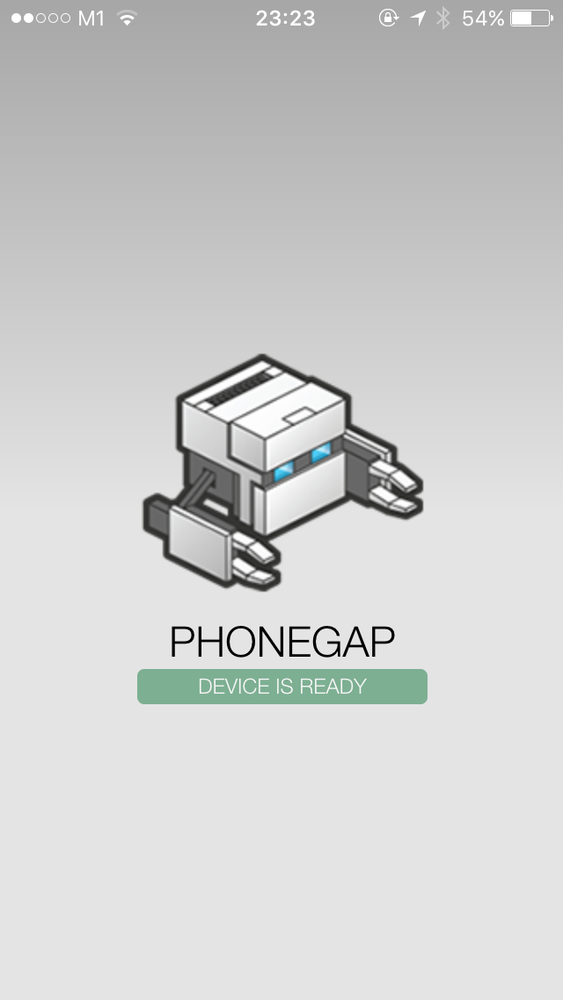
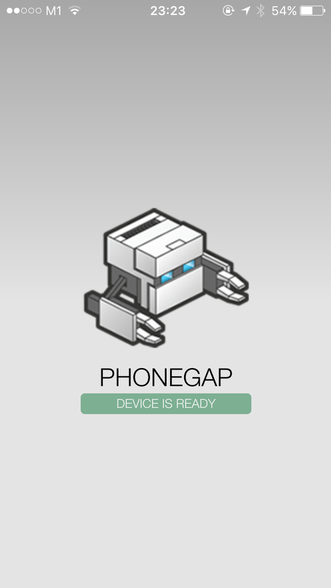

PhoneGap Tutorial
Setting Up Your Computer for PhoneGap Development
Created by Toh Jian Feng for the ACJC Hackathon
Hi There
Here are some step-by-step instructions on how to prepare your computer for PhoneGap development.
Use the left and right arrow keys to navigate between steps,
and the up and down arrow keys to navigate between sub-steps.
Press the Esc button to get an overview of the whole presentation.
Take Note:
The slides that you see here is not a complete guide to PhoneGap, but rather, just enough to tide you through the ACJC Hackathon.
What You'll Need
Command Line Interface (CLI)
You'll learn to love it.

You'll need it to download PhoneGap, which is in a Node Package Manager (npm) library format.
You'll won't be needing it, but your CLI will.
A smartphone
for obvious reasons.
It's not compulsory, but good to have.
Installing PhoneGap using npm
In your Terminal/Command Prompt, enter the following:
npm install -g phonegapsudo npm install -g phonegapWait for the packages to be downloaded. It may take a while.
You should be able to execute PhoneGap commands after that!
Creating a PhoneGap Application
Navigate to a folder of your liking.
Type in the following:
phonegap create <app name> <domain-style identifier> <app display title>where domain-style identifier is in the format com.<your name><app name>
The Insides of a PhoneGap App
config.xml
platforms

www
Testing a PhoneGap Application
1. Using the PhoneGap Developer App
Wireless linking. Live updating.
Yay.
We'll be using this as our main method of testing.
2. Directly transferring the app to your phone
USB cable sold separately.
3. Using a device emulator
Just because your computer can.
But you wouldn't want to.
4. Using the Google Chrome Developer Tools to display your app
For those who couldn't be bothered with the first 3 methods.
Testing a PhoneGap Application
(The Easy Way Out)Download the PhoneGap Developer app.
Navigate to the folder of your created app.
cd <something something folder location>Start the server.
phonegap serveTake note of the network address that appears on the command line.
Start the PhoneGap Developer App on your phone.

Enter the network address that you have noted down just now.
You should see this!
 

Live updating FTW.
Navigate to the folder labeled "www".
Open up index.html.
Try editing the the text within the h1 brackets and save the file.
Look at your phone.
Testing a PhoneGap Application
(The Hard Way)What You'll Need
An Android phone with Developer Options unlocked.
Testing a PhoneGap Application
(For the Extremely Lazy)What You'll Need
Yay.
Open up your app's index.html.
Access the Developer Tools by View > Developer > Developer Tools.
Press the following key combination on your computer:
Control + Shift + m
Command + Shift + m
Find out more about device emulating with Google Chrome here.
Summary
- An idea of how PhoneGap works
- The insides of a PhoneGap app
- Debugging your app using various methods
Further Exploration
PhoneGap has various plugins for you to play with.
- Accelerometer
- Camera
- Compass
- and many more...
Communicating with your Databases
PhoneGap has support on various storage options.
Of course,
it's best if you take a look at the whole picture.